Anleitung: Sensoren & Abdeckfolie
Für Imker:innen im Rahmen der Datenerhebung
Ziel: Diese Anleitung erklärt Schritt für Schritt, wie Sie die Sensoren einbauen, starten und ausschalten und wie Sie die Abdeckfolie (die Sie von uns erhalten) anpassen und einlegen.
Grundprinzip: Die Sensoren und die Abdeckfolie erhalten Sie von uns. Sie werden in der Kontrollbeute sowie in der isolierten Testbeute eingebaut. Pro Beute kommen 3 Sensoren in den Innenraum (1 unter den Deckel, 2 unten an eine Längsseite der Zarge). Dazu kommt 1 Wettersensor im Außenbereich. Welcher Sensor wohin gehört, steht als Code auf jedem Sensor. Die Sensoren müssen von Hand gestartet werden, bevor die Bienen in die Beute kommen. Die Abdeckfolie wird in beiden Beuten (konventionell und isoliert) eingelegt.
Vielen Dank für die Zusammenarbeit!
hanna.bliem@student.uibk.ac.at
1. Einbau im Inneren der Beute
Pro Beute kommen 3 Sensoren in den Innenraum. Jeder Sensor hat einen Code, der auf der Oberseite mit schwarzem Stift aufgetragen ist. Dieser Code sagt Ihnen, in welche Beute der Sensor gehört und an welche Stelle. Bitte dies unbedingt beachten!
Beschriftung der Sensoren
[Nr. am Standort]_[Standortcode]_[Beute]_[Position]
- 1Sensor Nr. 1 an Ihrem Standort
- INNStandortcode (hier: Innsbruck)
- KKontrollbeute (I = isolierte Beute)
- DPosition: Sensor unter dem Deckel
Die Kürzel im Überblick:
| Kürzel | Bedeutung | Wohin mit dem Sensor? |
|---|---|---|
| K | Kontrollbeute | Der Sensor gehört in die Kontrollbeute (konventionelle Beute). |
| I | Isolierte Beute | Der Sensor gehört in die isolierte Beute. |
| D | Deckel | Der Sensor liegt mittig unter dem Deckel, oben auf den Rähmchen. |
| M | Brutraum Mitte | Am unteren Rand der Zarge, an der Längsseite, mittig. |
| E | Brutraum Ecke | Am unteren Rand derselben Längsseite, Richtung Ecke, und zwar auf der dem Flugloch abgewandten Seite. |
| W | Wetter-/Standortsensor | Außensensor im Vogelhaus (Kapitel 2). Er misst Temperatur und relative Luftfeuchte außerhalb der Beute. Sein Code hat keinen Beute-Teil, z. B. 7_INN_W. |
| R | Reserve | Reservesensor für den Standort, z. B. 8_INN_R. |
Position im Inneren der Beute
Die Abbildung zeigt die drei Sensoren im Inneren. Die Himmelsrichtung spielt keine Rolle. Wichtig ist nur die Lage zum Flugloch.
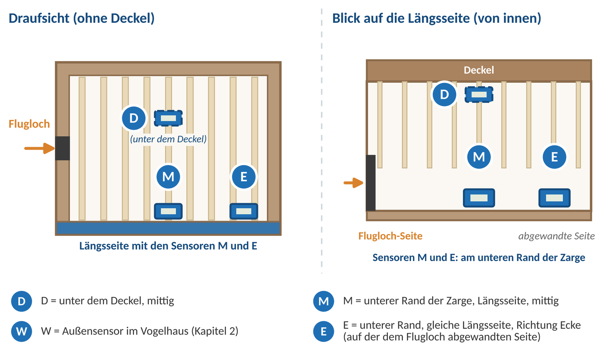
Anbringung der Sensoren
Im Inneren der Beute werden die Sensoren mit doppelseitigem Klebeband befestigt. Das Klebeband befindet sich bereits auf der Rückseite jedes Sensors. Gehen Sie so vor:
- Schutzfolie abziehen: Ziehen Sie die Schutzfolie vom Klebeband auf der Rückseite des Sensors ab.
- Fest andrücken: Drücken Sie den Sensor einige Sekunden fest an die Innenwand, am unteren Rand der Zarge an der vorgesehenen Stelle (M oder E).
- Bei Bedarf verstärken: Wenn der Sensor nicht sicher hält, verstärken Sie die Befestigung mit etwas ungiftigem Silikonkleber an den Rändern des Sensors.
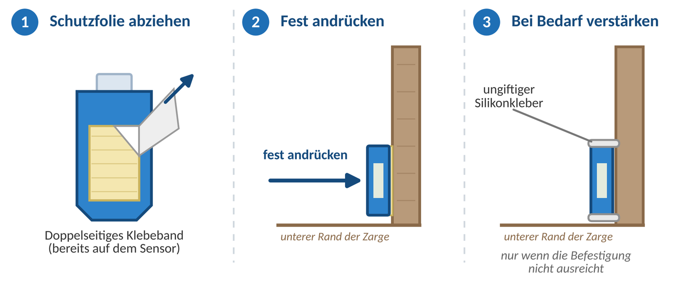
2. Einbau im Außenbereich
Der Außensensor (Kürzel W, Wetter-/Standortsensor) wird in einem kleinen Vogelhaus angebracht, damit er vor Wind und Wetter geschützt ist.
- ca. 1,5 m langer Holzstock
- Hammer und Nägel
- Vogelhaus
- Sensor
Arbeitsschritte
Holzstock einschlagen
Schlagen Sie den Holzstock in einem Abstand von 1,5 m zum Bienenstock in den Boden. Kontrollieren Sie, dass er fest genug sitzt und den ganzen Winter über dort stehen bleiben kann.
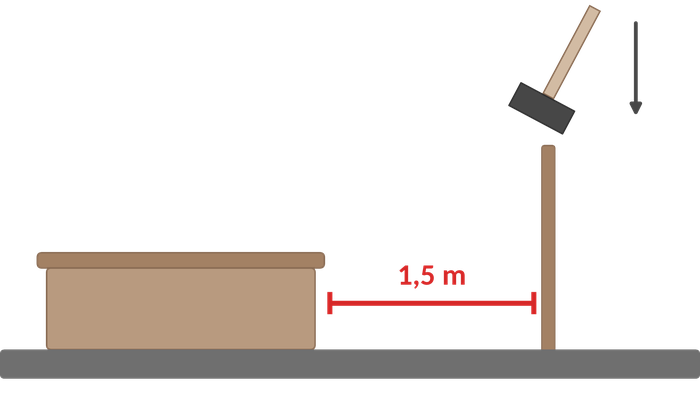
Vogelhaus befestigen
Setzen Sie das Vogelhaus auf den Holzstock und schlagen Sie 2 Nägel durch die vorgesehenen Löcher, um es am Stock zu befestigen.
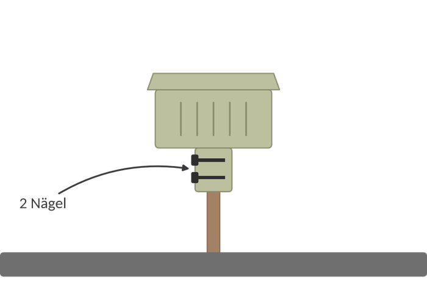
Sensor einlegen
Legen Sie den Sensor in das Innere des Vogelhauses.
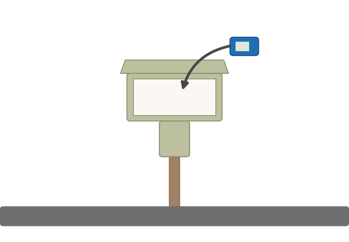
3. Sensoren starten & ausschalten
Jeder Sensor muss einzeln gestartet werden, und zwar bevor die Bienen in die Beute kommen. Nach dem Auswintern und vor dem Zurücksenden muss jeder Sensor wieder manuell ausgeschaltet werden.
Aufzeichnung starten
Halten Sie die Start-Taste länger als 3 Sekunden gedrückt, bis auf dem Display das Symbol „▶“ oder „Wait“ erscheint. Das zeigt an, dass die Aufzeichnung erfolgreich gestartet wurde.
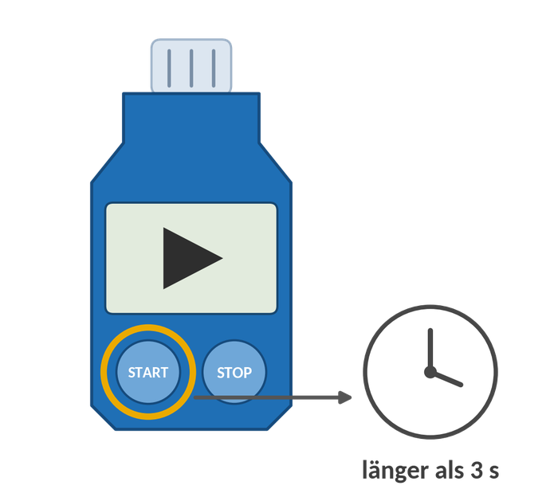
Aufzeichnung stoppen
Halten Sie die Stop-Taste länger als 3 Sekunden gedrückt, bis das Symbol „■“ auf dem Display aufleuchtet. Das zeigt an, dass die Aufzeichnung beendet wurde.
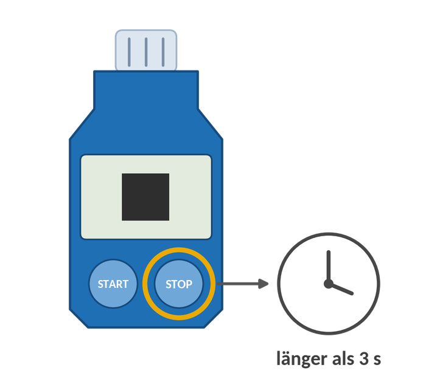
4. Abdeckfolie anpassen & einlegen
Bitte legen Sie die Abdeckfolie in beide Beuten ein (konventionelle und isolierte Beute).
Folie anpassen
Schneiden Sie die Abdeckfolie so zu, dass sie in der Beute überall bis ca. 1 mm an den Innenrahmen heranreicht. Die Folie liegt dann flach auf den Rähmchen.
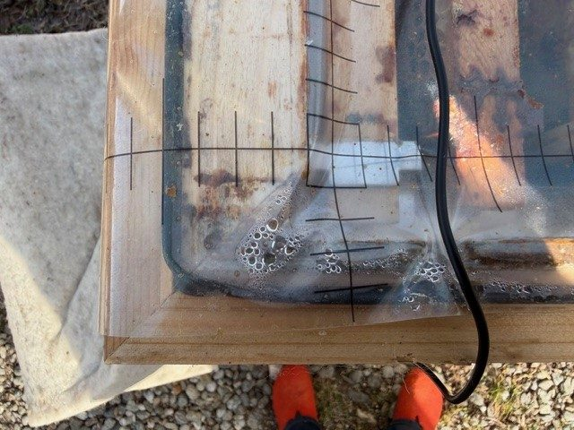
Folie darf nicht überstehen
Die Folie darf nicht über den Rahmen hinausragen und nicht an den Wänden hochstehen. Sonst zieht sie Feuchtigkeit von außen an und verliert ihre Wirkung.
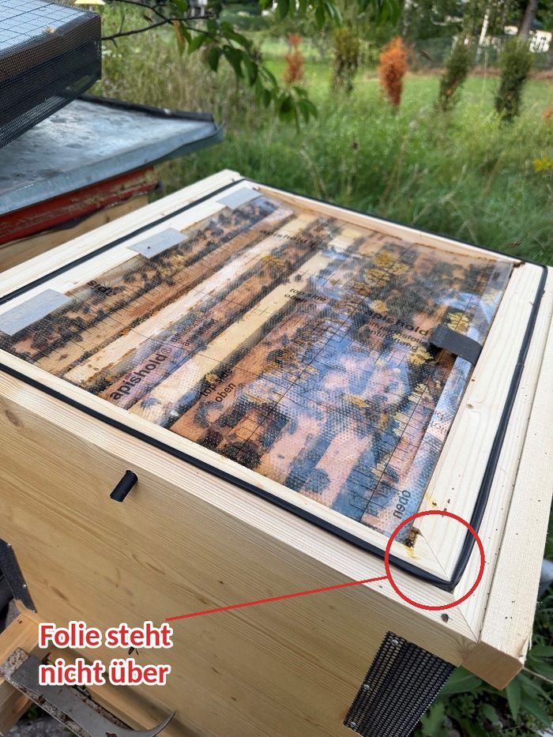
Folie einlegen und fixieren
Legen Sie die Folie auf die Rähmchen. Fixieren Sie sie auf der Seite gegenüber der Abziehlasche mit Klebeband, damit sie nicht verrutscht.
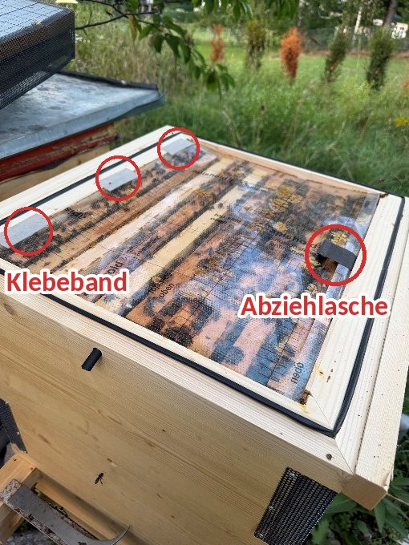
Beim Kontrollieren abziehen
Bei Kontrollen ziehen Sie die Folie an der Abziehlasche zur Seite (nur nach Bedarf). Legen Sie sie danach wieder glatt zurück.
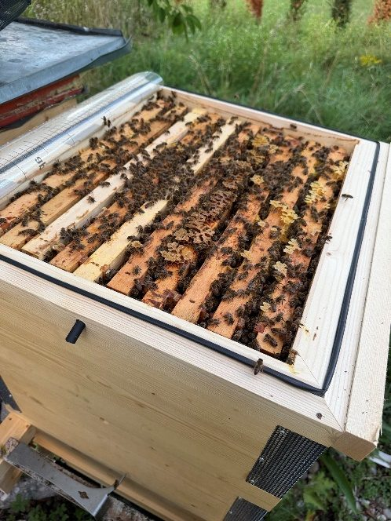
Vielen Dank für Ihre Mithilfe!
Projekt „Testung isolierter Bienenbeuten“ · Institut für Zoologie, Universität Innsbruck · hanna.bliem@student.uibk.ac.at